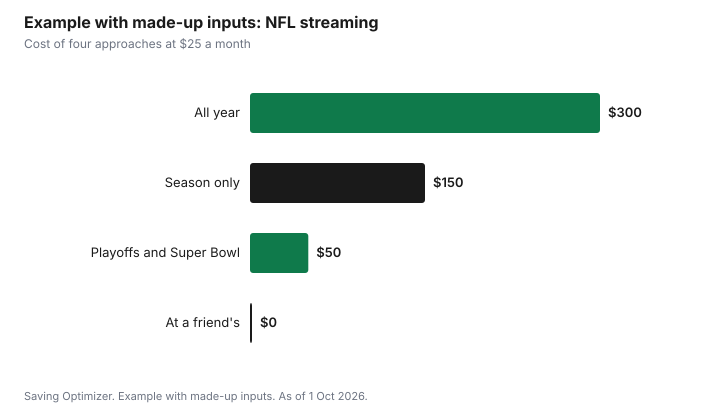

Sports · Canada
Watching the NFL in Canada: DAZN, TSN and Bars
Canadians have two main paid ways to stream the NFL in the 2026 season: DAZN, which says NFL Game Pass is included with a DAZN subscription in Canada, and TSN+, which carries NFL games all season plus the playoffs and the Super Bowl. DAZN's Standard plan is listed at $24.99 a month on a 12-month plan, and TSN's Standard plan is $24.99 a month. DAZN shows every game; TSN shows the games it has the rights to. If you only care about the playoffs and Super Bowl LXI on Sunday, 14 February 2027, a short subscription, a bar or a friend's place can cost far less than a full year.
Key takeaways
- DAZN: NFL Game Pass is included with a DAZN subscription in Canada; Standard $24.99 a month on a 12-month plan.
- DAZN Game Pass includes every regular-season and playoff game, NFL RedZone and NFL Network.
- TSN+ Standard $24.99 a month carries NFL games all season plus the playoffs and Super Bowl.
- TSN Premium $29.99 adds NFL RedZone and 24 more NFL games.
- Read the commitment terms: DAZN's monthly price is quoted on a 12-month plan; TSN says no refunds.
- Example with made-up inputs: a season-only plan saves $150 over paying all year.
DAZN NFL Game Pass
DAZN's Canadian pricing article lists four tiers, each priced as a monthly cost on an annual (12-month) subscription. Both DAZN Standard and DAZN+ include NFL Game Pass; DAZN+ adds the Premier League and Serie A. The Ultimate tiers add no pre-roll advertising, Multiview, downloads, 4K or HDR and Dolby 5.1 sound.
| Tier | Monthly cost (12 months) | NFL Game Pass |
|---|---|---|
| DAZN Standard | $24.99 | Included |
| DAZN Standard Ultimate | $29.99 | Included |
| DAZN+ | $44.99 | Included |
| DAZN+ Ultimate | $49.99 | Included |
DAZN says Game Pass includes every regular-season and playoff game, NFL RedZone, NFL Network and an NFL archive, plus Game in 40 and Sunday in 60 condensed replays. Its feature table says the Ultimate tier allows streaming on five devices in two locations, against two devices in one location for Regular, and adds Multiview of up to four games and alternative feeds such as the ManningCast. DAZN also says you can cancel in My Account and can pause an account, which then goes inactive at the end of the current subscription period.
TV games and TSN+
TSN's subscription page says TSN+ carries NFL games all season, plus the playoffs and Super Bowl, from August to February. TSN Standard is $24.99 a month and includes TSN 1 to 5 live channels. TSN Premium is $29.99 a month and adds NFL RedZone, 24 more NFL games, and other content. TSN also offers 3-month and annual plans; check the page for those prices. TSN says you can stream on up to two devices at once.
| Plan | Monthly price | NFL content |
|---|---|---|
| TSN Standard | $24.99 | NFL games all season, playoffs and Super Bowl |
| TSN Premium | $29.99 | Standard plus NFL RedZone and 24 more NFL games |
TSN's terms on that page say plans renew for the selected period (monthly in Quebec), are charged at the then-applicable price on renewal, may increase during the subscription, carry no refunds and can be cancelled anytime. If you already get TSN through a TV package, you can sign in through your TV provider instead of paying separately.
What else each service includes
If you will keep the subscription beyond football season, the rest of the lineup matters. DAZN's Canadian pricing article lists DAZN Standard as including the UEFA Champions League, UEFA Europa League, Bundesliga, UFC, LIV Golf, Matchroom Boxing and PDC Darts alongside NFL Game Pass, with DAZN+ adding the Premier League and Serie A. TSN's page lists the CFL, NBA, F1, golf majors, tennis Grand Slams and select regional NHL games, with regional blackouts. A soccer fan may find DAZN worth keeping all year; a CFL or Raptors fan may prefer TSN. A fan who only watches the NFL should treat either as a seasonal subscription.
| Service | Also includes |
|---|---|
| DAZN Standard | Champions League, Europa League, Bundesliga, UFC, LIV Golf, boxing, darts |
| DAZN+ | Standard plus Premier League and Serie A |
| TSN Standard | CFL, NBA, F1, golf majors, tennis Grand Slams, select regional NHL games |
Blackouts and device limits
Regional blackouts are mainly an NHL issue on TSN; its page notes NHL regional blackouts on select hockey games. For the NFL, the practical limits are devices and locations. DAZN's Regular Game Pass tier allows two devices in one location, while Ultimate allows five devices in two locations. TSN allows two concurrent streams. If a household wants to watch on more screens, or someone wants to watch at the cottage while others watch at home, check these limits before choosing.
| Service | Streams or devices | Locations |
|---|---|---|
| DAZN Game Pass Regular | 2 devices | 1 location |
| DAZN Game Pass Ultimate | 5 devices | 2 locations |
| TSN+ | 2 concurrent streams | Not stated on the page |
Prices
The two services cost about the same at the base level. The difference is coverage and commitment. DAZN's monthly price is quoted on a 12-month subscription, so a fan who only wants September to February may pay for months with no football unless a shorter plan is available at checkout. TSN offers monthly, 3-month and annual options and renews each period until cancelled. Read the plan terms at checkout before choosing.
Example with made-up inputs: season only versus all year
These numbers are an example with made-up inputs. They are not DAZN or TSN prices. A fan pays $25 a month. Paying all year costs $300. Subscribing from September to mid-February, six months, and cancelling after the Super Bowl costs $150, a $150 saving. Watching only the playoffs and the Super Bowl, two months, costs $50, and watching the Super Bowl at a friend's place costs nothing beyond snacks.
| Approach | Months | Cost |
|---|---|---|
| All year | 12 | $300 |
| Season only | 6 | $150 |
| Playoffs and Super Bowl | 2 | $50 |
| Super Bowl at a friend's | 0 | $0 plus snacks |

Bars and friends
A bar costs nothing for the stream but adds food, drinks, tips and the ride home; see sports bar versus hosting. Splitting one subscription with family in the same home is allowed within each service's device limits; sharing an account outside the household may break the terms. For Super Bowl hosting, see a Super Bowl party on a budget.
Plan
- Decide whether you want every game, your team's games, or only the playoffs.
- Check whether your TV package already includes TSN.
- Compare DAZN and TSN coverage and commitment terms at checkout.
- Set a reminder to cancel or pause after the Super Bowl on 14 February 2027.
- Check device and location limits for your household.
- Use a bar or a friend's place for one-off games.
For hockey streaming, see watching the NHL in Canada.
Sources
- DAZN, How much does DAZN cost in Canada, dazn.com, published 25 Sep, as of 1 Oct 2026. Tiers, monthly cost on annual subscription, sports included, cancel and pause.
- DAZN, Is NFL Game Pass included in a regular DAZN subscription, dazn.com, published 9 Sep, as of 1 Oct 2026. Game Pass included in Canada; features; device and location limits.
- TSN, TSN+ subscription page, tsn.ca/plus, as of 1 Oct 2026. Standard and Premium monthly prices, NFL content, two concurrent streams, renewal and refund terms.
- SoFi Stadium, Super Bowl LXI event page, sofistadium.com, as of 1 Oct 2026. Sunday, 14 Feb 2027, time to be announced.
- The monthly price and months in the example are an example with made-up inputs.
Frequently asked questions
Is NFL Game Pass included with DAZN in Canada?
Yes. DAZN says NFL Game Pass is included with the DAZN subscription in Canada, including every regular-season and playoff game, NFL RedZone and NFL Network.
How much does DAZN cost in Canada?
DAZN's Canadian pricing article lists DAZN Standard at $24.99 a month on a 12-month plan, Standard Ultimate at $29.99, DAZN+ at $44.99 and DAZN+ Ultimate at $49.99, as of 1 Oct 2026.
Does TSN+ show the NFL?
Yes. TSN's page says TSN+ carries NFL games all season plus the playoffs and Super Bowl. TSN Standard is $24.99 a month; Premium at $29.99 adds NFL RedZone and 24 more games.
When is Super Bowl LXI?
SoFi Stadium lists Super Bowl LXI for Sunday, 14 February 2027, with the time to be announced.
How can I watch the NFL for less?
Subscribe only for the months you watch, check whether your TV package includes TSN, cancel after the Super Bowl, and watch one-off games with friends.
Researched and drafted with AI assistance and fact-checked against official Canadian sources. How we create content.
Disclosure: Saving Optimizer may earn a commission if a partner link is added later, such as a streaming offer type. No partnership is claimed on this page. Education only.